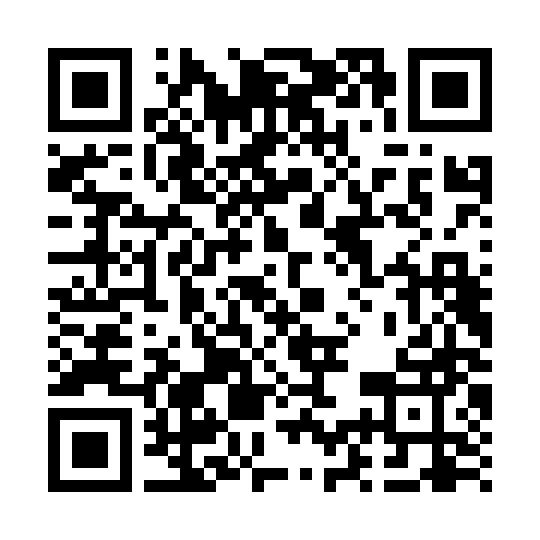

Sua doação transforma vidas.
Com a sua ajuda, podemos levar ração, tratamento veterinário e um futuro melhor para dezenas de animais resgatados.
Doe com Pix
Escaneie o QR Code abaixo ou copie a chave Pix para colar no app do seu banco:

Chave Pix copiada com sucesso! Abra o aplicativo do seu banco para colar.
Dados para conferência no banco:
Beneficiário: Associação de Proteção Animal Socorro Bicho (APASBAC)
CNPJ: 15.778.930/0001-48
Tipo de Chave: CNPJ
As doações via Pix vão direto para a conta oficial da associação e são integralmente destinadas à compra de medicamentos, ração e despesas veterinárias dos animais acolhidos.